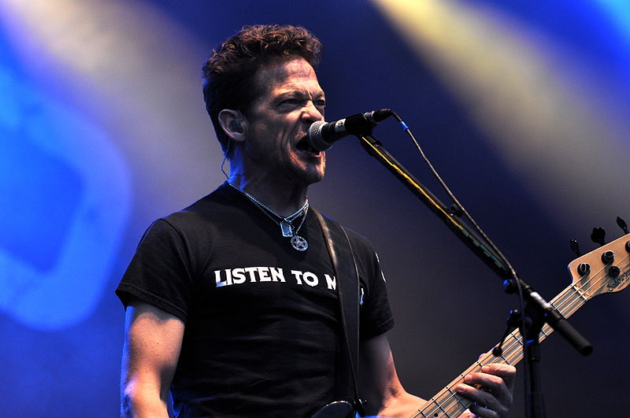
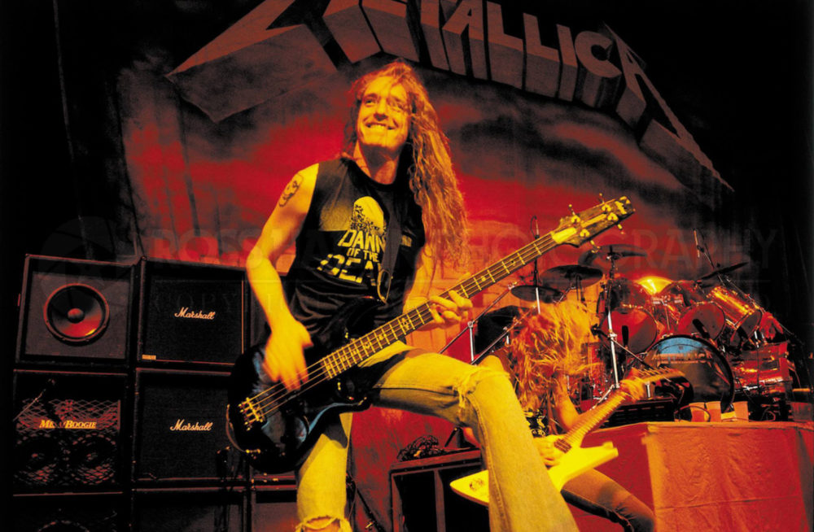

História da Banda
A história dessa ilustre banda começa em Los Angeles, em 1981, quando Lars Ulrich e James Hatfield resolvem formar a banda, colocando um anúncio no jornal Recycler, de Los Angeles.
Em 14 de março de 1982 acontece o primeiro show da história do Metallica no Radio City, em Anaheim no Sul da Califórnia.
A primeira música do show foi "Hit The Lights", além de duas músicas próprias, a banda tocou covers de bandas como Diamond Head e Savege, em um show de nove canções.
As músicas tocadas foram:- Hit The Lights
- Blitzkrieg - Blitzkrieg cover
- Helpless - Diamond Head cover
- Jump In The Fire
- Let It Loose - Savege cover
- Sucking My Love - Diamond Head cover
- Am I Evil? - Diamond Head cover
- The Prince - Diamond Head cover
- Killing Time - Sweet Savage cover
Integrantes Atuais
- James Hatfield, guitarrista e vocalista
- Lars Ulrich, baterista
- Krik Hammett, guitarrista
- Rob Trujillo, baixista
Antigos Integrantes



- Jason Newsted, baixista
(Deixou a banda em janeiro de 2001; 1987-2001) - Cliff Burton, baixista
(Morreu em um acidente de ônibus em 1986; 1983-1986) - Dave Mustaine, guitarrista
(Expulso da banda por problemas com drogas e álcool em 1983; 1982-1983) - Ron McGovney, baixista
(Não tinha interesse na carreira musical e saiu da banda em 1983; 1982-1983)